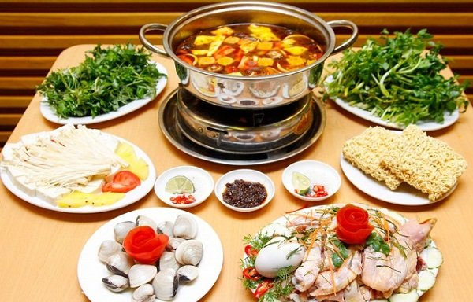
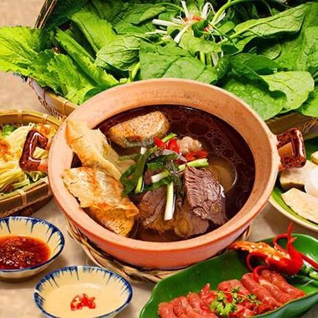
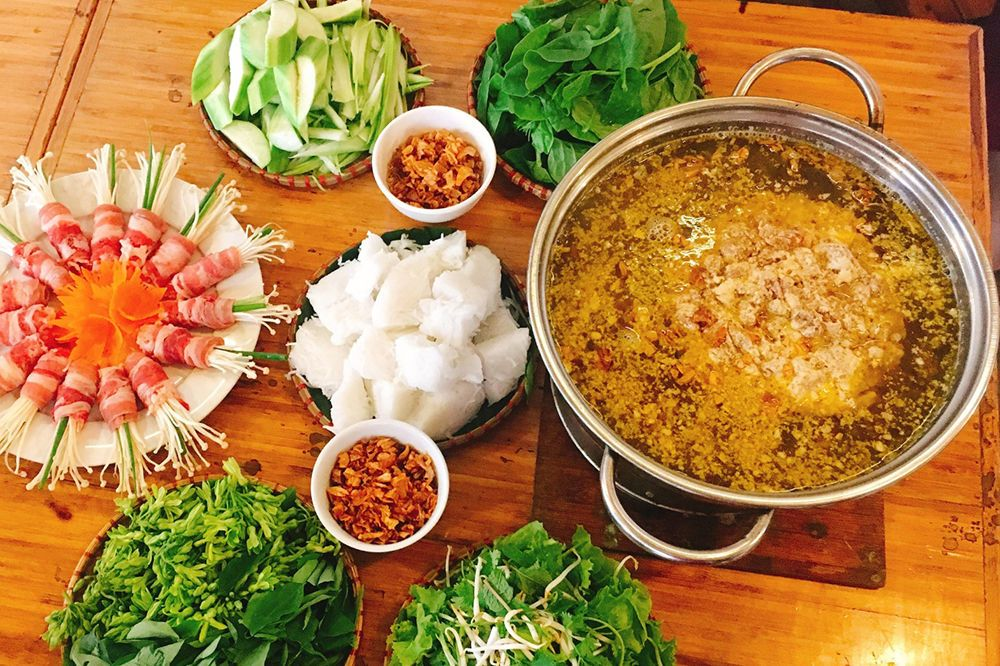
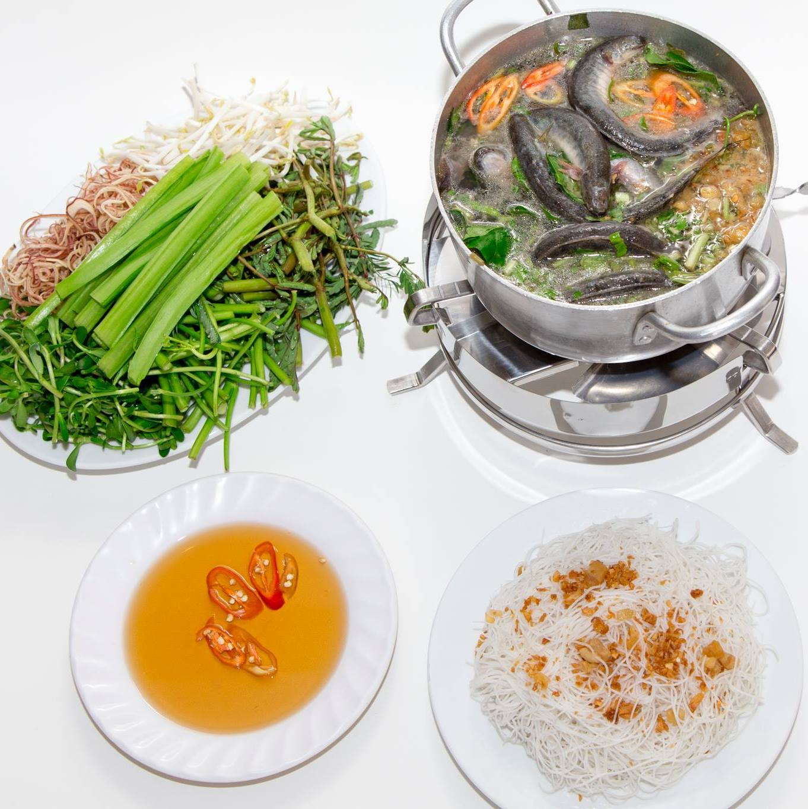

Cách nấu lẩu hải sản thường được thực hiện với sự kết hợp của nhiều loại hải sản khác nhau và thường được gọi cách khác là lẩu hải sản thập cẩm.
Để có một nồi lẩu hải sản nhìn khiến ai cũng mê mẩn ngay khi thấy, bạn cần chuẩn bị các nguyên liệu và thực hiện theo công thức dưới đây của kênh cẩm nang nội trợ nấu ăn ngon này nhé!
Với những ngày mùa đông giá rét như thế này thì món lẩu luôn được ưu tiên hàng đầu bởi vị thơm ngon, hấp dẫn từ nhiều loại thực phẩm, nóng sốt và ngọt lừ. Không chỉ thế mà món lẩu còn mang thêm hơi ấm gia đình bạn bè khi tất cả cùng quây quần bên nồi lẩu và nói chuyện vui vẻ. Cùng nhau bày cách nấu lẩu thập cẩm ngon tuyệt vời và cực nhanh nào!
Cách nấu lẩu đuôi bò thơm ngon khó cưỡng được chuyên mục món ngon mỗi ngày chia sẻ dưới đây sẽ khiến bạn ngạc nhiên không ngờ vì để nấu món lẩu đuôi bò ngon không khó nấu như mọi người vẫn nghĩ.
Cách nấu lẩu cua đồng không chỉ hấp dẫn, khiến cả nhà mê tít vào mùa hè mà ngay cả những ngày đông lạnh, món ngon này cũng nằm trong list đồ ăn không thể bỏ qua. Vậy thì còn chờ gì nữa mà không kênh cẩm nang nội trợ nấu ăn ngon cùng tìm hiểu các nguyên liệu cũng như cách nấu lẩu cua đồng ngon tuyệt này nhỉ?
.Lẩu cá kèo là món ăn mang đậm hương vị đặc trưng dân dã miền Nam. Món ăn hấp dẫn với vị chua của lá Giang, vị béo của cá Kèo hòa quyện cùng các loại gia vị khác khiến bạn phải thổn thức mãi. Cách nấu món lẩu cá Kèo cực kì đơn giản mà hấp dẫn sẽ là một món ăn được nhiều gia đình để ý tới
